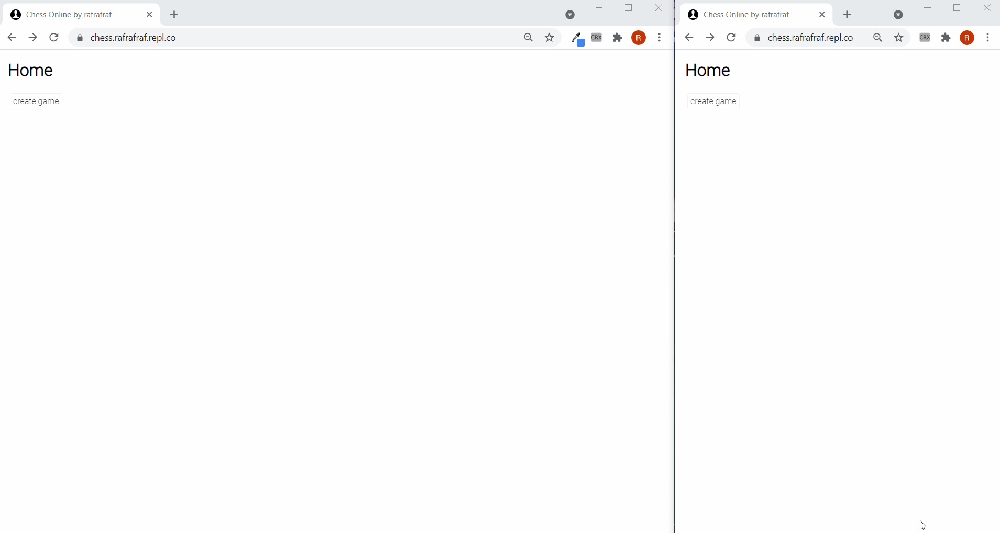

Real-time Web Application
Online Chess Platform
A Python-based multiplayer chess platform built around live client interactions, server-side coordination, and synchronized game state.
Problem
Live chess breaks if players see different board states, stale turns, or inconsistent move history.
Solution
Built a server-centered multiplayer flow that coordinates connected clients and keeps each game state synchronized as moves happen.
Technical depth
- Python server logic for multiplayer sessions
- Real-time client-server communication
- Concurrent clients and turn coordination
- Shared game-state updates across users